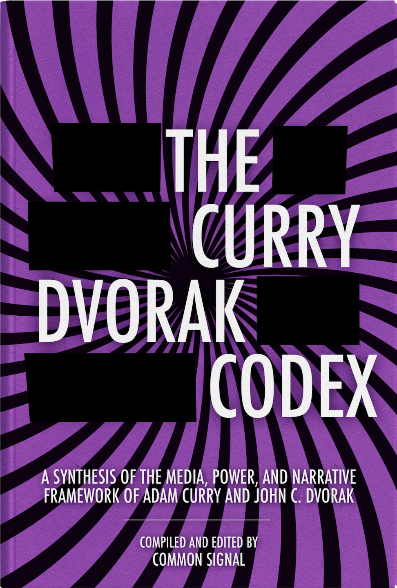

Part I — The Information Environment
Part II — Institutions
Part III — The Mechanics of Narrative
Part IV — Technology and Control
Part V — Sensemaking
Introduction
There is a ritual that has played out twice a week, without interruption, for nearly two decades. Two men sit down in separate rooms, connected by a digital thread, and begin to read the news. Not to summarize it. Not to endorse it. To take it apart.
The show they produce, No Agenda, opens each episode with the same invocation: a transmission "from the military industrial media complex," active and unimpeded. It is a joke, but the kind of joke that contains a precise proposition. The proposition is that information, as it arrives to citizens through professional channels, is not neutral. It is shaped. It is produced. And understanding how it is produced is the prerequisite for understanding anything else that follows.
No Agenda is not primarily a podcast. It is a long-running experiment in media literacy conducted in public.
Adam Curry was, for years, one of the most recognizable faces on MTV, a figure at the exact center of the machine that manufactured youth culture in the late twentieth century. John C. Dvorak was a technology journalist and critic whose career spanned the formative decades of the personal computer industry, observing firsthand how technical innovation becomes commercial narrative and commercial narrative becomes cultural assumption. Both men arrived at the same diagnostic conclusion from different directions: the information environment that most people treat as a window onto reality is, in practice, a construction. The signals worth trusting are buried beneath enormous volumes of noise. Most of what passes for news is, in one form or another, a product designed for purposes that have little to do with informing the audience.
The framework they developed for thinking about this is not a conspiracy theory, though it is frequently mistaken for one. It does not require the existence of a coordinating cabal directing journalists from a central room. It requires only the recognition of something more mundane and more consequential: that media is a business, that businesses have incentives, that incentives shape behavior, and that behavior operating at industrial scale produces effects that are systematic even when they are unplanned. The story is not about bad actors. It is about structures.
Over time, that analysis expands beyond journalism itself. The same incentive structures appear in government agencies, technology platforms, corporations, universities, public health institutions, and political parties. Media becomes the entry point into a broader study of how modern systems generate and maintain legitimacy.
This book is a synthesis of that framework. It draws on thousands of hours of conversation between Curry and Dvorak, ranging across every domain in which narrative systems operate: politics, public health, technology, economics, international affairs, institutional science, and the broader architecture of expert authority. The conversations are rarely tidy. They meander, backtrack, then return, sharpened, to the matter at hand. The analytical core, however, is consistent. When a news clip arrives, the first question is not what it says but how it was constructed, what it includes, what it excises, and what structural interest the construction serves.
A video circulates appearing to show a congressman defending stock trading by legislators. The clip spreads rapidly. Curry traces it to the source. The omitted opening contains the opposite position: support for a ban. An argument being rebutted becomes, through selective editing, an argument being endorsed. The mechanism is simple. The effect is profound. Meaning is changed not through fabrication but through the removal of context.
What Curry and Dvorak practice, and what this book attempts to systematize, is a method of watching. The method has several components. The first is structural: understanding how media organizations are financed, what their incentive systems produce, and who the actual customer of any given news product is. The second is linguistic: identifying the specific vocabulary that signals a narrative in construction, the loaded terms, the emotional framing devices, the authoritative passive constructions that conceal the identity of those making claims. The third is comparative: reading the same event across multiple outlets to isolate what is emphasized, what is shared across all of them, and what is conspicuously absent from each. The fourth, and perhaps most demanding, is psychological: understanding the cognitive architecture that makes human beings susceptible to narrative manipulation in the first place, and building habits of mind that compensate for those vulnerabilities.
None of this produces certainty, and that is the point. The goal is not to swap credulous consumption of mainstream narratives for credulous consumption of alternative ones. It is the maintenance of a permanent, productive uncertainty: a stance of active evaluation that resists the closure that narrative is specifically designed to produce. Cynicism assumes corruption without examination. Contrarianism reverses the consensus without analysis. What Curry and Dvorak model, at their best, is something harder and more useful: the willingness to follow the evidence wherever it leads, while never ceding the responsibility of independent evaluation.
The book is organized in five parts. The first deals with the information environment itself: the economics of media, the mechanics of narrative construction, and the psychological features that make those mechanics effective. The second examines institutions, understood as systems that develop interests of their own independent of the individuals who populate them, and that pursue those interests through means that are often invisible to outside observers. The third explores the recurring patterns through which institutional narratives are deployed, with particular attention to the phenomena of moral panic, manufactured consensus, and the management of expert authority. The fourth addresses the specific conditions created by digital technology, including both the opportunities for disintermediation that platforms have created and the new concentrations of power that have emerged to replace the old ones. The fifth turns toward the reader, framing the practices of evaluation and sensemaking that constitute an adequate response to the information environment that all of the preceding chapters describe.
The argument that runs through all five parts is not that information is impossible or that truth is inaccessible. It is that the infrastructure through which information is delivered is not neutral, and that its non-neutrality is systematic, producible from first principles, and visible to anyone who looks. The looking is the work. That work is what this book is for.
Chapter 1 onwards
Every monetary system in history has been subject to the same fundamental vulnerability: the authority that issues the money can debase it. Gold solved this problem partially, for a time, but gold was heavy, divisible only at cost, and ultimately seizeable by the same sovereigns who used it. The history of money is a history of this tension — between the need for a reliable store of value and the tendency of power to corrupt every medium that has served that function...